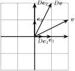

Section 2.6 行列の例
Subsection 2.6.1 零行列
Subsection 2.6.2 対角行列
\(n\times n\) 正方行列について考える。 各\(i\in\{1,2,\dotsc,n\}\) について、\((i,i)\) 成分のことを正方行列の対角成分という。 対角成分でない成分のことを正方行列の非対角成分という。 非対角成分がすべて 0 である正方行列を対角行列という。
一般に対角行列
\begin{equation*}
D =
\begin{bmatrix}
d_{1}\amp \amp \amp \\
\amp d_{2}\amp \textrm{\LARGE $0$}\amp\\
\amp \amp \ddots \amp\\
\amp\textrm{\LARGE $0$} \amp \amp d_n
\end{bmatrix}
\end{equation*}
について、\(D\bm{e}_j = d_j\bm{e}_j\) である。 つまり、対角行列は数ベクトルの各成分を伸び縮みさせる写像を表す。 例えば
\begin{equation*}
\begin{bmatrix}
1/2\amp0\\
0\amp2
\end{bmatrix}
\begin{bmatrix}
x\\
y
\end{bmatrix}
=
\begin{bmatrix}
(1/2)x\\
2y
\end{bmatrix}
\end{equation*}
なので という写像になる。

対角成分がすべて 1 である対角行列を単位行列といい \(I\) と表す(\(E\) と表す流儀もある)。 行列のサイズが分かるように \(I_n\) と表すこともある。 任意の \(n\) 次元数ベクトル \(\bm{v}\) について、\(I_n\bm{v}=\bm{v}\) である。 クロネッカーのデルタ
\begin{equation*}
\delta_{i,j}\coloneqq
\begin{cases}
1,\amp\text{if } i = j\\
0,\amp\text{otherwise}
\end{cases}
\end{equation*}
を用いて、\(I_n=[\delta_{i,j}]_{i,j}\) と表すこともできる。
Subsection 2.6.3 置換行列
正方行列 \(P\in\mathbb{R}^{n\times n}\) で各行、各列に 1 が一つだけ存在して、それ以外の要素がすべて 0 であるような行列を置換行列という。
例えば
\begin{equation*}
\begin{bmatrix}
1\amp0\\
0\amp1
\end{bmatrix}
,\qquad
\begin{bmatrix}
0\amp1\\
1\amp0
\end{bmatrix}
,\qquad
\begin{bmatrix}
0\amp1\amp0\\
0\amp0\amp1\\
1\amp0\amp0\\
\end{bmatrix}
,\qquad
\begin{bmatrix}
0\amp1\amp0\\
1\amp0\amp0\\
0\amp0\amp1\\
\end{bmatrix}
\end{equation*}
は置換行列である。 置換行列は数ベクトルの成分を置換する写像を表す。
Subsection 2.6.4 2次元回転行列
任意の \(\theta\in\mathbb{R}\) について \(2\times 2\) 実行列
\begin{equation*}
R(\theta)\coloneqq
\begin{bmatrix}
\cos\theta \amp -\sin\theta\\
\sin\theta \amp \cos\theta
\end{bmatrix}
\end{equation*}
を2次元回転行列という。
\begin{align*}
R(\theta)\bm{e}_1 \amp= \begin{bmatrix}\cos\theta\\\sin\theta\end{bmatrix}\\
R(\theta)\bm{e}_2 \amp= \begin{bmatrix}-\sin\theta\\\cos\theta\end{bmatrix}
\end{align*}